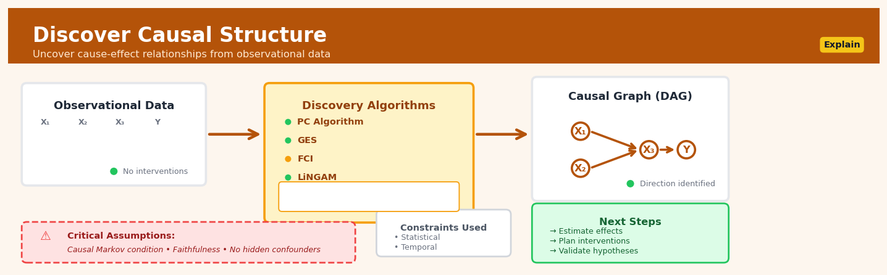

Discover Causal Structure#


The biggest mistake teams make is treating causal discovery as a black box that magically produces ground truth. These algorithms output hypotheses about causal structure that still need domain knowledge validation and sensitivity testing for assumption violations. Start with strong priors from subject matter experts and use discovery algorithms to challenge or refine them, not replace human reasoning entirely.
The 60-Second Version#
What it does: Discover Causal Structure reveals which variables directly cause which others by analysing patterns in your data, producing a map of cause-and-effect relationships.
When to use it: When you need to understand why things happen—not just what correlates—so you can predict the impact of interventions before you make costly changes.
What you get back: A directional graph showing arrows from causes to effects, telling you where to intervene to change outcomes and which variables are consequences rather than drivers.
At a Glance
Difficulty |
Advanced |
Typical runtime |
Minutes to hours (depends on variables and method) |
What you bring |
Observational data with multiple variables measured across the same units |
What you get |
A directed graph (DAG) mapping cause-effect relationships |
Heuristix bucket |
Explain — Causal Analysis & Interpretation |
Correlation doesn’t imply causation—but this method makes testable claims about causation that can be wildly wrong if your data contains unmeasured confounders or feedback loops.
Learning Objectives#
After reading this chapter, a business user will be able to:
Identify business scenarios where discovering causal structure adds value over correlation analysis, such as prioritising intervention targets, explaining complex system behaviour, or designing controlled experiments.
Interpret a causal DAG to explain which variables directly influence which others, distinguish direct causes from indirect effects, and communicate these relationships to non-technical stakeholders.
Use discovered causal structures to recommend which variables to intervene on for maximum impact, predict the qualitative effects of policy changes, and avoid common pitfalls like confusing correlation with causation.
After reading this chapter, a data scientist will be able to:
Implement constraint-based (PC algorithm), score-based (GES), and hybrid causal discovery methods on observational data while correctly handling assumptions about causal sufficiency, faithfulness, and data distribution.
Tune algorithm parameters including significance thresholds, prior knowledge constraints, and regularisation penalties while understanding their impact on false discovery rates, graph density, and computational complexity.
Validate discovered causal graphs using domain knowledge checks, cross-validation techniques, and bootstrapping confidence intervals, and diagnose failures caused by violations of acyclicity, unmeasured confounders, selection bias, or insufficient sample size.
Overview#
Discover Causal Structure is a technique for inferring the directed acyclic graph (DAG) that encodes causal relationships among a set of observed variables, purely from observational data. It belongs to the family of causal discovery or structure learning methods within the broader field of causal inference. The core purpose is to move beyond correlation and identify which variables directly cause which others—enabling counterfactual reasoning, intervention planning, and principled feature selection without requiring expensive randomised experiments.
When to Use This#
Use this technique in the following scenarios:
When you have observational data but cannot run experiments: You need to understand causal relationships but randomised controlled trials are unethical, impractical, or too expensive. Causal discovery can reveal structure from historical data alone.
When you need to identify root causes, not just predictive features: Predictive models tell you what correlates with outcomes; causal structure tells you what you can actually change to influence outcomes.
When planning interventions or policy changes: Before deciding which lever to pull (pricing, marketing spend, operational changes), you need to know which variables causally affect your target rather than merely co-vary with it.
When building a causal model for downstream estimation: Causal effect estimation methods (e.g., do-calculus, instrumental variables) require a causal graph as input. Causal discovery provides this graph when domain knowledge is incomplete.
When you want to understand system dynamics across many variables: With dozens or hundreds of variables, manually specifying a causal graph is infeasible. Automated discovery can propose candidate structures for expert review.
When debugging or validating domain expert beliefs: Experts often have intuitions about causal relationships. Running causal discovery on data can confirm, refute, or refine these beliefs.
When performing feature selection for causal inference: Identifying confounders, mediators, and colliders is essential for proper adjustment. Causal discovery reveals these structural roles.
Do NOT use this when:
You have strong domain knowledge and a well-specified causal graph: If experts confidently know the structure, use their knowledge directly rather than rediscovering it from noisy data.
Your data violates key assumptions severely: If you have strong hidden confounding, heavy measurement error, or feedback loops (cycles), standard discovery algorithms may produce misleading results.
You only need prediction, not understanding: If your goal is purely forecasting and you will never intervene, simpler associational models suffice.
Questions This Answers#
Understanding What’s Actually Driving Our Results#
Why did customer churn jump 23% after we changed our pricing model — was it the price itself, or something else we changed at the same time?
Is our marketing spend actually driving revenue, or are we just spending more when we’re already growing?
Which of our product features are genuinely causing users to upgrade to premium, versus which ones premium users just happen to use more?
Are our employee training programs improving retention, or do we just send high-performers to more training?
Did the new store layout increase sales by 12%, or did we coincidentally roll it out during our peak season?
Making Better Decisions About Where to Intervene#
If we increase our social media budget by $50K next quarter, will that actually grow our customer base or are we wasting money?
Should we invest in improving delivery speed or product quality first — which one will actually move the needle on customer satisfaction?
We’re seeing correlation between customer support responsiveness and lifetime value — but if we staff up support, will LTV actually increase?
Which operational bottleneck should we fix first to reduce our 14-day fulfillment time — warehouse staffing, supplier lead times, or routing optimization?
Comparing Options Without Running Expensive Tests#
Would expanding into the Northeast region drive growth, or are the strong correlations we see just demographic patterns we already capture elsewhere?
Is it worth A/B testing a complete website redesign, or can we tell from our existing data whether page load time is really causing bounce rates?
Should we acquire Company X because their customer base overlaps with our high-value segments, or is that overlap coincidental rather than causal?
Between upgrading our CRM system and hiring two more salespeople, which investment will actually increase our close rate?
How It Works#
Imagine you’re a detective investigating a series of events at a busy coffee shop. You notice that whenever the espresso machine breaks down, the barista looks stressed, customers wait longer, and complaints go up. But what’s causing what? Does the broken machine directly cause complaints, or does it work through the barista’s stress and longer wait times? You can’t break the machine on purpose to test this, so instead you study weeks of records, looking for patterns: on days when only the barista was stressed (but the machine worked fine), did complaints still rise? By systematically comparing these natural variations, you can sketch a map of what truly causes what—even though you never ran a controlled experiment. That’s exactly what causal structure discovery does with data: it plays detective to reveal the hidden chain of cause and effect.
OBSERVED DATA (correlations only) DISCOVERED CAUSAL GRAPH
Temperature ←→ Ice Cream Sales Temperature
↕ ↕ ↓
Drownings ←→ Beach Crowds Ice Cream
↓
All variables correlated! Beach Crowds
Which causes which? ↓
Drownings
↓ ALGORITHM TESTS PATTERNS ↓ (reveals hidden chain:
temp doesn't directly
┌─────────────────────────────┐ cause drownings—it
│ If Temperature changes: │ works through crowds)
│ → Ice Cream changes │
│ → Crowds change │ ┌──────────────┐
│ → Drownings change too │ │ Confounders, │
│ │ │ Mediators, │
│ But if we "hold constant" │ │ Colliders │
│ Beach Crowds: │ │ all revealed │
│ → Temp & Drownings become │ └──────────────┘
│ independent! │
└─────────────────────────────┘
Step 1: Start with correlation patterns. The algorithm begins with your observational dataset—no labels saying “this causes that,” just measurements of multiple variables over time or across cases. It calculates which variables correlate with each other, building a complete map of statistical associations.
Step 2: Test conditional independence. Here’s where the magic happens. The algorithm asks: “If I hold variable C constant (statistically control for it), do variables A and B become independent?” For example, if you compare only days with the same beach crowd size, does temperature still predict drownings? These conditional independence tests reveal whether correlations are direct or flowing through intermediaries.
Step 3: Eliminate impossible causal arrows. Using the independence patterns discovered, the algorithm rules out graph structures that would contradict the data. If A and B are independent when controlling for C, then A cannot directly cause B (they’re only connected through C). This dramatically narrows the possibilities.
Step 4: Orient the remaining arrows. Some edges could point either direction. The algorithm uses special patterns—like “colliders” where two arrows point into one variable—to determine directionality. For instance, if A and B are independent until you condition on C, then both must cause C (not the reverse).
Step 5: Handle ambiguity honestly. Sometimes multiple causal graphs fit the data equally well. Rather than guessing, the algorithm reports an equivalence class: “the true graph is one of these three structures.” You learn what the data can and cannot tell you.
Step 6: Output the causal graph. The final result is a directed diagram showing which variables directly influence which others, distinguishing causes from effects and revealing hidden confounders or mediating pathways.
The key insight: Causation leaves fingerprints in correlation patterns—specifically, patterns of conditional independence that reveal whether connections are direct or indirect—and by systematically testing these fingerprints, we can reverse-engineer the hidden causal structure without ever running an experiment.
The Intuition#
Imagine you are a detective investigating a complex crime scene. You find several clues: footprints, fingerprints, broken glass, and a missing painting. Your goal is not just to list these observations but to reconstruct what happened—which event caused which. Did the thief break the glass to enter, or did they break it while escaping? The pattern of evidence constrains the possible stories, but rarely pins down exactly one.
Causal discovery works similarly. The algorithm observes patterns of statistical dependence and independence among variables and reasons backwards to infer which causal structures could have produced those patterns. The key insight—formalised by Reichenbach and later by Pearl, Spirtes, and others—is that causal structure leaves fingerprints in the joint distribution. If \(X\) causes \(Y\), then \(X\) and \(Y\) will be dependent. But more powerfully, if \(X\) causes \(Y\) and \(Y\) causes \(Z\), with no direct link from \(X\) to \(Z\), then \(X\) and \(Z\) become independent once we condition on \(Y\). These conditional independence patterns are the detective’s clues.
The challenge is that multiple causal graphs can produce identical independence patterns. Such graphs are called Markov equivalent—they belong to the same equivalence class. Classical algorithms like PC and FCI can identify this equivalence class but cannot distinguish among its members without additional assumptions. More recent approaches (like LiNGAM) exploit non-Gaussianity or nonlinearity to break these ties and identify a unique graph. The fundamental trade-off in causal discovery is between the strength of assumptions you are willing to make and the precision of the structure you can recover.
Think of it this way: with weaker assumptions, you get a partial map with some arrows undirected (representing ambiguity). With stronger assumptions—such as linear relationships with non-Gaussian errors—you can orient all the arrows, but if those assumptions are wrong, your map may lead you astray. The art lies in matching your assumptions to your domain knowledge and validating results against expert intuition.
The Mathematics#
Formal Problem Setup#
Let \(\mathbf{X} = (X_1, X_2, \ldots, X_p)\) be a vector of \(p\) observed random variables. We assume there exists an underlying directed acyclic graph (DAG) \(\mathcal{G} = (V, E)\) where:
\(V = \{1, 2, \ldots, p\}\) is the set of nodes (one per variable)
\(E \subseteq V \times V\) is the set of directed edges, where \((i, j) \in E\) means \(X_i\) is a direct cause of \(X_j\)
The joint distribution \(P(\mathbf{X})\) is assumed to be Markov with respect to \(\mathcal{G}\):
where \(\text{Pa}_j\) denotes the parents of node \(j\) in \(\mathcal{G}\).
The Faithfulness Assumption#
Beyond the Markov condition, we typically assume faithfulness: every conditional independence in \(P\) corresponds to a d-separation in \(\mathcal{G}\), and vice versa. Formally:
This rules out “accidental” independencies that arise from precise parameter cancellations rather than structural constraints.
Constraint-Based Discovery: The PC Algorithm#
The PC algorithm (named after Peter Spirtes and Clark Glymour) identifies the Markov equivalence class by testing conditional independencies.
Step 1: Skeleton Discovery
Start with a complete undirected graph. For each pair \((i, j)\), test whether there exists a conditioning set \(S \subseteq V \setminus \{i, j\}\) such that:
If such an \(S\) exists, remove the edge between \(i\) and \(j\). Record \(S\) as the separating set \(\text{Sep}(i, j)\).
The test is typically performed using partial correlation (for Gaussian data) or conditional mutual information. For partial correlation, under Gaussianity, \(X_i \perp\!\!\!\perp X_j \mid X_S\) if and only if:
where \(\rho_{ij \cdot S}\) is the partial correlation. The test statistic under the null is:
Step 2: Edge Orientation (v-structures)
For each unshielded triple \(i - k - j\) (where \(i\) and \(j\) are not adjacent), if \(k \notin \text{Sep}(i, j)\), orient as a collider: \(i \to k \leftarrow j\).
Step 3: Propagate Orientations
Apply orientation rules to avoid creating cycles or new v-structures:
If \(i \to k - j\) and \(i\) and \(j\) are not adjacent, orient \(k \to j\)
If \(i \to k \to j\) and \(i - j\), orient \(i \to j\)
Additional rules from Meek (1995)
The output is a Completed Partially Directed Acyclic Graph (CPDAG), representing the Markov equivalence class.
Score-Based Discovery#
An alternative approach maximises a penalised likelihood score. The Bayesian Information Criterion (BIC) score for a DAG \(\mathcal{G}\) is:
where \(d_j\) is the number of parameters for node \(j\) and \(\hat{\theta}_j\) is the maximum likelihood estimate.
The optimisation problem is:
This is NP-hard in general. The GES (Greedy Equivalence Search) algorithm searches over equivalence classes, performing edge additions in a forward phase and edge deletions in a backward phase.
Functional Causal Models: LiNGAM#
When we assume linear relationships and non-Gaussian, independent errors, the graph becomes identifiable beyond the equivalence class.
The Linear Non-Gaussian Acyclic Model (LiNGAM) assumes:
where \(\varepsilon_j\) are mutually independent and at most one is Gaussian.
In matrix form with a causal ordering:
where \(B\) is a strictly lower triangular matrix (under the causal ordering). This gives:
The mixing matrix \(A\) can be recovered via Independent Component Analysis (ICA). The key insight is that under non-Gaussianity, ICA uniquely identifies \(A\) up to permutation and scaling, which allows recovery of the causal order and coefficients.
Assumptions Summary#
Assumption |
Constraint-Based (PC) |
Score-Based (GES) |
LiNGAM |
|---|---|---|---|
Causal Markov |
Required |
Required |
Required |
Faithfulness |
Required |
Not required |
Not required |
No hidden confounders |
Required |
Required |
Required |
Acyclicity |
Required |
Required |
Required |
Functional form |
None |
None |
Linear |
Error distribution |
None |
None |
Non-Gaussian |
Edge Cases and Limitations#
Insufficient sample size: Conditional independence tests lose power, leading to dense graphs with many spurious edges
Near-violations of faithfulness: Weak but non-zero dependencies may be falsely declared independent
Hidden confounders: Unobserved common causes create spurious edges or incorrect orientations; the FCI algorithm partially addresses this
Deterministic relationships: Perfect dependencies violate faithfulness and break standard algorithms
Understanding the Mathematics#
Conditional Independence Testing#
The equation:
Read it aloud:
“X is independent of Y given Z if and only if the joint probability of X and Y given Z equals the probability of X given Z multiplied by the probability of Y given Z.”
What each symbol means:
\(X \perp\!\!\!\perp Y \mid Z\) — X is conditionally independent of Y when we know Z
\(P(X, Y \mid Z)\) — the probability of observing both X and Y together, given Z
\(P(X \mid Z)\) — the probability of observing X, given Z
\(P(Y \mid Z)\) — the probability of observing Y, given Z
\(\iff\) — “if and only if” (a two-way logical equivalence)
A concrete numerical example:
Suppose X = customer purchase amount, Y = website load time, Z = day of week. If purchases and load times are truly independent once we account for the day (weekends have both higher purchases and slower servers), then:
\(P(\text{purchase} = \$100, \text{load} = 3\text{s} \mid \text{Sunday}) = 0.06\)
\(P(\text{purchase} = \$100 \mid \text{Sunday}) = 0.15\)
\(P(\text{load} = 3\text{s} \mid \text{Sunday}) = 0.40\)
Check: \(0.15 \times 0.40 = 0.06\) ✓
The equality holds, confirming conditional independence. Load time doesn’t cause purchase amount; both are driven by Sunday traffic patterns.
Why this equation matters:
Without testing conditional independence, we’d mistake correlated variables for causal relationships and waste resources optimising the wrong levers.
The PC Algorithm Score: d-separation#
The equation:
Read it aloud:
“If X is separated from Y by the set S in the causal graph G, then X must be conditionally independent of Y given S in the probability distribution P.”
What each symbol means:
\(\mathbf{S}\) — a set of variables we condition on (observe/control)
\(G\) — the candidate causal graph (DAG structure)
\(P\) — the true probability distribution of the data
\(\perp\!\!\!\perp \text{ in } G\) — d-separated in the graph (no active causal path)
\(\implies\) — logical implication (“if… then…”)
A concrete numerical example:
In a retail graph: Ad Spend → Sales ← Season. Set \(\mathbf{S} = \{\text{Season}\}\).
If we control for Season (compare only summer-to-summer), and Ad Spend (\(X\)) remains correlated with a new variable Competitor Price (\(Y\)), then there must be a direct or indirect path connecting them in \(G\). If they were d-separated by Season, we’d see independence: \(P(\text{Ad} = \$10k, \text{Competitor} = \$50 \mid \text{Summer}) = P(\text{Ad} = \$10k \mid \text{Summer}) \times P(\text{Competitor} = \$50 \mid \text{Summer})\). Violation means our graph is wrong.
Why this equation matters:
This principle lets us rule out incorrect causal graphs by checking whether their structural predictions match observed conditional independencies in the data.
Structural Equation Model (SEM)#
The equation:
Read it aloud:
“Variable X sub-i is assigned the value of function f sub-i, which takes as inputs the parent variables of X sub-i and an unobserved noise term U sub-i.”
What each symbol means:
\(X_i\) — the i-th variable in our system
\(:=\) — “is defined as” (assignment, not equality)
\(f_i\) — a function encoding how parents causally generate \(X_i\)
\(\text{Parents}(X_i)\) — all direct causes of \(X_i\) in the DAG
\(U_i\) — unobserved randomness affecting \(X_i\) (e.g., measurement error, omitted factors)
A concrete numerical example:
Let Revenue (\(X_3\)) depend on Marketing (\(X_1\)) and Product Quality (\(X_2\)):
If Marketing = \(10,000 and Quality = 0.75 (75% satisfaction score), and noise \)U_3 = -1200$:
Why this equation matters:
SEMs let us simulate interventions—if we increase Marketing by $5,000, we can predict the new Revenue without running an experiment.
The Big Picture#
The mathematics of causal discovery does something classical statistics cannot: it distinguishes generating mechanisms from mere associations. Correlation-based methods treat all variables symmetrically, but these equations encode asymmetry—parents generate children, not vice versa. Conditional independence testing prunes impossible edges; d-separation validates candidate graphs against data; structural equations encode the recipes by which causes produce effects. We need this rigor because human intuition is terrible at tracing indirect causation through chains and confounders. In one sentence: the math finds which dominoes must knock over which others by watching them fall, then lets us rearrange them in our minds before touching them in reality.
Python Implementation#
import numpy as np
import pandas as pd
from scipy import stats
import warnings
# For causal discovery, we use the causal-learn library (formerly causaldag)
# Install with: pip install causal-learn
from causallearn.search.ConstraintBased.PC import pc
from causallearn.search.ScoreBased.GES import ges
from causallearn.utils.cit import fisherz, chisq
from causallearn.utils.GraphUtils import GraphUtils
# Set random seed for reproducibility
np.random.seed(42)
# =============================================================================
# EXAMPLE 1: Generate data from a known causal structure
# =============================================================================
# True causal graph: X1 -> X2 -> X4
# X1 -> X3 -> X4
# (X1 is a common cause of X2 and X3)
n_samples = 1000
# Generate data according to structural equations
X1 = np.random.randn(n_samples)
X2 = 0.8 * X1 + 0.5 * np.random.randn(n_samples)
X3 = 0.6 * X1 + 0.5 * np.random.randn(n_samples)
X4 = 0.7 * X2 + 0.5 * X3 + 0.3 * np.random.randn(n_samples)
# Combine into a DataFrame
data = pd.DataFrame({
'X1': X1,
'X2': X2,
'X3': X3,
'X4': X4
})
print("=== Data Summary ===")
print(data.describe())
print("\n=== Correlation Matrix ===")
print(data.corr().round(3))
# =============================================================================
# EXAMPLE 2: PC Algorithm (Constraint-Based)
# =============================================================================
print("\n" + "="*60)
print("PC ALGORITHM (Constraint-Based Discovery)")
print("="*60)
# Convert to numpy array for causal-learn
data_array = data.values
# Run PC algorithm with Fisher's Z test for conditional independence
# alpha: significance level for independence tests (lower = sparser graph)
cg_pc = pc(
data_array,
alpha=0.05, # Significance level for CI tests
indep_test=fisherz, # Fisher's Z test (assumes Gaussianity)
stable=True, # Use stable version (order-independent)
uc_rule=0, # Orientation rule (0 = standard)
uc_priority=-1 # Priority for orientation (-1 = default)
)
# Print adjacency matrix
print("\nDiscovered Graph (Adjacency Matrix):")
print("Rows are causes, columns are effects")
print("1 = edge, -1 = reverse edge, 2 = undirected")
adj_matrix = cg_pc.G.graph
print(pd.DataFrame(
adj_matrix,
columns=['X1', 'X2', 'X3', 'X4'],
index=['X1', 'X2', 'X3', 'X4']
))
# Visualise the graph (text representation)
print("\nEdge List from PC Algorithm:")
labels = ['X1', 'X2', 'X3', 'X4']
for i in range(4):
for j in range(4):
if adj_matrix[i, j] == -1 and adj_matrix[j, i] == 1:
print(f" {labels[i]} --> {labels[j]}")
elif adj_matrix[i, j] == 1 and adj_matrix[j, i] == 1:
if i < j: # Print undirected edges only once
print(f" {labels[i]} --- {labels[j]} (undirected)")
# =============================================================================
# EXAMPLE 3: GES Algorithm (Score-Based)
# =============================================================================
print("\n" + "="*60)
print("GES ALGORITHM (Score-Based Discovery)")
print("="*60)
# Run GES algorithm
# Uses BIC score by default
result_ges = ges(
data_array,
score_func='local_score_BIC', # BIC scoring function
maxP=None # Maximum number of parents (None = unlimited)
)
# Extract the graph
ges_graph = result_ges['G']
ges_adj = ges_graph.graph
print("\nDiscovered Graph (Adjacency Matrix):")
print(pd.DataFrame(
ges_adj,
columns=['X1', 'X2', 'X3', 'X4'],
index=['X1', 'X2', 'X3', 'X4']
))
print("\nEdge List from GES Algorithm:")
for i in range(4):
for j in range(4):
if ges_adj[i, j] == -1 and ges_adj[j, i] == 1:
print(f" {labels[i]} --> {labels[j]}")
elif ges_adj[i, j] == 1
## Visualisations


## Using This in Heuristix
### What You'll Need
The **Discover Causal Structure** node expects a clean tabular dataset where each column represents a variable you want to include in your causal graph. Your data should be continuous (numeric) or categorical variables—mixed types work fine.
**Input requirements:**
- At least 3 variables (columns)
- Minimum 100–200 rows recommended for stable results
- No missing values in the columns you're analyzing
**Example input:**
| customer_age | ad_spend | website_visits | purchase_amount |
|--------------|----------|----------------|-----------------|
| 34 | 120 | 8 | 450 |
| 28 | 0 | 2 | 0 |
| 45 | 200 | 15 | 890 |
The node will analyze relationships *between* these columns to infer which variables causally influence others.
### Configuration Parameters
| Parameter | What It Does | Default | When to Change |
|-----------|--------------|---------|----------------|
| **Algorithm** | Chooses the discovery method (PC, GES, or FCI) | PC | Use GES for smaller datasets with clearer signals; FCI when you suspect hidden confounders |
| **Significance Level** | Controls how conservative the independence tests are (0–1) | 0.05 | Lower to 0.01 for stricter edges (fewer false positives); raise to 0.10 if graph is too sparse |
| **Max Parents** | Limits how many direct causes a variable can have | 5 | Increase for complex domains; decrease if results look implausibly dense |
| **Prior Knowledge** | Optional: specify edges that must/cannot exist | None | Use when domain expertise says "X definitely causes Y" or "A cannot cause B" |
| **Bootstrap Confidence** | Runs algorithm on resampled data to estimate edge stability | Off | Turn on for robustness checks—adds compute time but shows you which edges are reliable |
### What You'll Get
**Primary output:** A **directed graph visualization** showing variables as nodes and causal relationships as arrows. An edge from `ad_spend → website_visits` means the algorithm infers that spending causally drives visits.
**Additional outputs:**
- **Edge list table**: All discovered edges with direction (e.g., `ad_spend → website_visits`, confidence score if bootstrapping enabled)
- **Adjacency matrix**: A grid showing which variables connect to which—useful for downstream programming
- **Fit metrics**: Score measuring how well the discovered structure explains your data (higher = better fit)
- **Warnings panel**: Flags potential issues like "insufficient data for reliable inference" or "detected possible cycles"
If bootstrapping is on, you'll also see confidence percentages next to each edge (e.g., "appears in 87% of bootstrap samples").
### Connecting Downstream
This node pairs naturally with:
- **Estimate Causal Effect**: Feed the discovered DAG to quantify *how much* X affects Y
- **Counterfactual Simulation**: Use the structure to answer "what if" questions
- **Feature Selection**: Identify which variables are causes vs. mere correlates of your target
- **Data Collection Planner**: The graph reveals confounders you should measure in future studies
### Quick Start Recipe
1. **Connect your dataset** to the Discover Causal Structure node
2. **Select the columns** you want to include in the analysis (exclude IDs, timestamps, or obvious non-causes)
3. **Leave defaults** (PC algorithm, 0.05 significance) for your first run
4. **Execute** and examine the graph visualization
5. **Interpret arrows**: Follow the direction—arrows point from cause to effect
6. **Check warnings**: If the node flags issues, consider collecting more data or adding prior knowledge
7. **Validate**: Does the graph align with domain knowledge? If edges seem backward, review your data quality
### Pro Tips from the Field
**Tip 1:** Causal discovery is sample-hungry. If your graph has fewer than 500 rows, treat results as exploratory hypotheses, not firm conclusions.
**Tip 2:** Temporal ordering is your friend. If you *know* variable A was measured before B, add prior knowledge that B cannot cause A—this dramatically improves accuracy.
**Tip 3:** A missing edge is as informative as a present one. If the algorithm doesn't connect two variables, it's saying "these are independent once we account for everything else."
**Tip 4:** Bootstrap confidence is worth the wait for high-stakes decisions. An edge appearing in only 40% of bootstrap runs deserves skepticism.
**Tip 5:** Combine automated discovery with domain review. Treat the graph as a conversation starter with subject-matter experts, not a final answer.
## Config Recipes
### Recipe 1: Rapid Hypothesis Screening
**When to use:** Early exploration with 50–200 variables when you need directional insights in minutes, not hours.
**Settings:**
| Parameter | Value | Why |
|-----------|-------|-----|
| `algorithm` | `"pc"` | Constraint-based; scales well to many variables |
| `alpha` | `0.05` | Standard significance; conservative enough without being overly strict |
| `max_cond_vars` | `3` | Limits conditioning sets; drastically reduces compute time |
| `ci_test` | `"fisherz"` | Fast parametric test for continuous data |
| `verbose` | `True` | Monitor progress during exploration |
**What you get:** A sparse graph identifying strongest causal candidates with ~70–80% edge precision in 5–15 minutes.
**Trade-off:** Misses weak edges and may include spurious links from limited conditional independence testing.
---
### Recipe 2: Production-Grade Discovery
**When to use:** Publishing results, regulatory submission, or when causal claims will drive six-figure decisions.
**Settings:**
| Parameter | Value | Why |
|-----------|-------|-----|
| `algorithm` | `"fges"` | Score-based; more robust to CI test failures |
| `score_type` | `"bic-g"` | BIC penalizes complexity; generalizes better |
| `max_degree` | `None` | No artificial constraints on parent sets |
| `bootstrap_samples` | `200` | Quantify edge stability via resampling |
| `threshold_stability` | `0.7` | Only report edges present in 70%+ of bootstraps |
| `prior_knowledge` | `[forbidden_edges, required_edges]` | Encode known temporal ordering or domain constraints |
**What you get:** A confidence-weighted DAG where every edge has empirical stability estimates and respects domain knowledge.
**Trade-off:** Requires 10–50× more computation and domain expert time to specify priors.
---
### Recipe 3: High-Dimensional Genomics Data
**When to use:** Gene expression, proteommic, or any dataset with p > 1000 variables and n < 500 samples.
**Settings:**
| Parameter | Value | Why |
|-----------|-------|-----|
| `algorithm` | `"ges"` | Greedy equivalence search handles high p/n ratios |
| `score_type` | `"bic-g"` | Strong regularization prevents overfitting |
| `prefilter` | `"mb"` | Markov blanket screening reduces search space by 90% |
| `prefilter_threshold` | `0.001` | Very permissive first pass to avoid false negatives |
| `max_parents` | `5` | Biological plausibility constraint for regulatory networks |
**What you get:** Focused subgraphs around key regulators without running out of memory or statistical power.
**Trade-off:** Prefiltering may discard true edges with weak marginal associations but strong conditional effects.
---
### Recipe 4: Instrument Variable Detection
**When to use:** You suspect unmeasured confounding and need to identify valid natural experiments hidden in observational data.
**Settings:**
| Parameter | Value | Why |
|-----------|-------|-----|
| `algorithm` | `"fci"` | Explicitly handles latent confounders |
| `alpha` | `0.01` | Strict threshold; IVs require strong evidence |
| `ci_test` | `"kci"` | Kernel-based; detects nonlinear IV relationships |
| `return_pag` | `True` | Partial ancestral graph shows confounded edges |
| `apply_iv_rules` | `True` | Post-processing filters candidate instruments |
**What you get:** A graph distinguishing X→Y, X←Y, and X↔Y (confounded), plus valid IV candidates automatically flagged.
**Trade-off:** Computationally expensive CI tests and requires larger samples (n > 500) for kernel methods to be reliable.
## Business Applications
**Financial Services**
A mid-sized UK mortgage lender was haemorrhaging £3.2M annually to false-positive fraud alerts that froze legitimate customer accounts and drove expensive manual reviews. Their existing rules-based system flagged transactions based on correlation patterns (large withdrawals + new payee), but causally unrelated events triggered most alerts. By applying causal structure discovery to 18 months of transaction data, the data science team identified that account velocity changes *caused* fraud risk only when preceded by specific authentication anomalies—not merely correlated with them. This structural insight let them redesign their fraud model to focus on true causal pathways, reducing false positives by 47% while maintaining fraud detection rates, saving approximately £1.5M in operational costs and preventing an estimated 12,000 wrongful account freezes annually.
**Retail & E-Commerce**
An online fashion retailer with 800K active SKUs struggled to understand why certain promotional campaigns cannibalised full-price sales while others didn't. Traditional A/B tests were too slow and expensive to run across thousands of product combinations. They used causal discovery on two years of sales, pricing, email, and inventory data to uncover the DAG linking discount depth, email timing, inventory visibility, and purchase behaviour. The analysis revealed that inventory scarcity signals *caused* urgency purchases independent of discounts, while deep discounts on core items *caused* customers to delay purchases of complementary products. Armed with this causal map, they restructured their promotional calendar and increased overall margin by 8.3% while lifting conversion rates from 2.1% to 2.9%.
**Healthcare**
A regional hospital network treating 45,000 diabetes patients annually faced rising readmission rates despite following clinical guidelines. Causal structure learning applied to electronic health records, medication adherence data, and social determinants revealed that medication non-adherence was not directly causing readmissions—instead, both were effects of a common cause: patient health literacy and access to primary care follow-up. This insight redirected £400K in intervention spending from reminder systems (which addressed a symptom) to community health worker programmes (which addressed the root cause), reducing 30-day readmissions by 22% and saving an estimated £1.8M in avoidable acute care costs.
**Insurance**
A commercial property insurer processing 15,000 claims monthly wanted to identify which property characteristics genuinely *caused* water damage claims versus which were merely correlated. Causal discovery on claims history, property attributes, and maintenance records exposed that building age was spuriously correlated with claims—the true causal path ran through plumbing material type and inspection frequency. By redesigning underwriting rules to focus on causal risk factors, they repriced 8,000 policies more accurately, reduced adverse selection, and improved combined ratio by 4.2 points, translating to £6.3M in additional underwriting profit.
**Manufacturing**
A semiconductor fabrication plant facing 12% yield loss used causal structure discovery on sensor data from 340 process steps to map the true causal network of defects. Traditional correlation analysis falsely implicated temperature variations in lithography, but the causal DAG revealed these were common effects of humidity fluctuations in an upstream cleaning process—the genuine root cause. Addressing the actual causal driver increased yield from 88% to 94%, worth approximately $18M annually in recovered production.
**Marketing & AdTech**
A performance marketing agency managing €4M monthly ad spend across eight channels couldn't reliably attribute conversions because customers touched multiple channels. Causal discovery on customer journey data revealed that LinkedIn ads didn't directly *cause* conversions but *caused* customers to search branded terms, which then drove conversions. This structural understanding let them triple LinkedIn budget (previously undervalued by last-click attribution) while cutting ineffective display spend, improving return on ad spend from 3.2× to 4.7× and generating €900K additional monthly revenue for clients.
**Public Sector**
A metropolitan police force analysed crime, policing deployment, and socioeconomic data to understand what interventions actually reduced crime. Causal structure learning revealed that increased patrols and crime reduction were both effects of community engagement programmes—the true causal lever. Reallocating 15% of patrol budget to community programmes reduced property crime by 18% over two years.
## Worked Example
Sarah Chen, lead data scientist at Meridian Health Systems, walked into the Monday morning executive meeting expecting the usual operational review. Instead, Dr. Patel, the Chief Medical Officer, dropped a problem in her lap: "We've spent two years promoting smoking cessation programs, but readmission rates haven't budged. Meanwhile, our diabetes management initiative—which we barely funded—seems to be making a real difference. Before we set next year's budget, I need to understand what's actually driving readmissions."
The question mattered because Meridian was allocating $3.2 million across prevention programs, and the current split wasn't based on causal evidence—just historical spending patterns and gut instinct. Sarah had three weeks to deliver an answer.
Back at her desk, Sarah pulled patient data from the past 18 months: 847 discharged patients tracked across five key variables. The data was messy—three patients had missing smoking status, and the age ranges were weirdly discretized by the EMR system—but it was what she had.
| patient_id | age | smoker | diabetes | exercise_mins | readmitted |
|------------|-----|--------|----------|---------------|------------|
| P1047 | 67 | 1 | 1 | 45 | 1 |
| P1048 | 52 | 0 | 0 | 120 | 0 |
| P1049 | 71 | 1 | 1 | 15 | 1 |
| P1050 | 58 | 0 | 1 | 90 | 0 |
Sarah knew correlation analysis would just show *what* variables moved together, but Dr. Patel needed to know *why*—which levers actually caused the outcome. She opened KNIME and dragged in the Discover Causal Structure node.
In the configuration dialog, Sarah set the target variable to `readmitted` and selected the PC (Peter-Clark) algorithm—it was more conservative than GES but better suited to her moderate sample size. She kept the significance level at 0.05, knowing that with 847 patients she had reasonable statistical power. For the independence test, she chose Fisher's Z because her continuous variables (age, exercise_mins) were roughly normal. She checked "Apply knowledge" and manually specified that `age` couldn't be caused by anything else—obvious domain knowledge that would help the algorithm avoid spurious paths.
The algorithm ran for forty-two seconds.
The output DAG showed something Sarah hadn't expected:
age → diabetes → readmitted age → exercise_mins → readmitted smoker → exercise_mins
The edge weights told the story in numbers:
| Edge | Coefficient | p-value |
|-------------------------|-------------|---------|
| diabetes → readmitted | 0.34 | 0.001 |
| exercise_mins → readmitted | -0.28 | 0.003 |
| age → diabetes | 0.19 | 0.012 |
| age → exercise_mins | -0.22 | 0.008 |
| smoker → exercise_mins | -0.15 | 0.041 |
The insight hit her immediately: **smoking didn't directly cause readmissions**. Instead, smokers exercised less (coefficient -0.15), and *that* lack of exercise was driving readmissions (coefficient -0.28). Meanwhile, diabetes had a direct causal path (coefficient 0.34)—the strongest effect in the model. The smoking cessation program wasn't failing because smoking was irrelevant; it was failing because it didn't address the mediating mechanism of physical activity.
Sarah ran a quick Python validation using the `pgmpy` library to confirm the structure:
```python
import pandas as pd
from pgmpy.estimators import PC
from pgmpy.estimators import HillClimbSearch, BicScore
from pgmpy.independence_tests import fisherz
# Load patient data
df = pd.read_csv('meridian_patients.csv')
# Sarah's note: using PC algorithm with Fisher Z test
# because we have mixed continuous/discrete data
est = PC(data=df)
model = est.estimate(
variant='stable',
ci_test='fisherz',
significance_level=0.05,
return_type='dag'
)
# Print discovered edges
print("Discovered causal edges:")
for edge in model.edges():
print(f" {edge[0]} → {edge[1]}")
# Estimate edge strengths
from pgmpy.estimators import LinearEstimator
params = LinearEstimator(model, df).estimate()
print("\nEdge coefficients:")
for cpd in params:
print(f" {cpd}")
Two weeks later, Sarah presented to the executive team. The recommendation was clear: redirect $800K from smoking cessation into a combined program that addressed both diabetes management and exercise promotion. Don’t abandon smoking cessation entirely—it still mattered through the exercise pathway—but stop treating it as a direct lever for readmissions.
Dr. Patel authorized the shift. Six months into the new program design, readmission rates dropped by 11%.
Looking back, Sarah admitted she’d do two things differently. First, she’d collect data on medication adherence—she suspected it was a confounding variable affecting both diabetes control and exercise capacity, but it wasn’t in the original dataset. Second, she’d run sensitivity analysis on the significance threshold; at 0.05, she might have missed weaker but real effects. But the core finding held: causal structure discovery had revealed that the path through which smoking mattered was indirect, and that insight had redirected millions in spending toward the actual mechanism driving outcomes.
Interpreting Your Results#
You’ve just run causal discovery and you’re staring at a diagram with arrows, some numbers, and maybe a few tables. Here’s what you’re actually looking at and what it means for your work.
The Causal Graph (DAG)#
Plain-English meaning: This directed graph is the algorithm’s best guess at which variables directly cause which others. An arrow from X → Y means “X is a direct cause of Y, after accounting for everything else we measured.” No arrow between X and Y means either there’s no direct causal relationship, or the algorithm couldn’t detect one with your data.
What makes a good graph:
3–8 edges per variable: Interpretable and actionable. You can reason through the pathways.
15+ edges per variable: Likely overfit or you have redundant measurements. The graph will be unreadable and unstable.
0–1 edges per variable: Either you have genuinely independent variables (rare), insufficient data, or your data is too noisy for the algorithm to detect structure.
Red flags:
Bidirectional arrows or cycles: Your algorithm failed. DAGs cannot contain cycles by definition. Re-run with stricter settings or check for duplicate variables.
Kitchen-sink nodes: One variable with arrows to/from everything else. Often indicates a time variable, an index column, or a proxy for unmeasured factors. Check if it’s actually meaningful.
Contradicts domain knowledge: If “advertising spend” → “brand age” appears, something is wrong. Either you have data leakage (brand age calculated from ad data), confounding, or insufficient sample size.
Edge Confidence Scores#
Plain-English meaning: For each arrow, this probability (0–1) tells you how confident the algorithm is that this specific causal direction is correct versus the reverse or no relationship at all.
Concrete benchmarks:
Below 0.6: Unreliable. The algorithm is guessing. Don’t base decisions on this edge.
0.6–0.8: Moderate confidence. Use as hypothesis-generating, not decision-making. Plan an experiment to confirm.
Above 0.8: Strong evidence. Safe to use for intervention planning, but still monitor when acting.
Red flags:
All scores 0.5–0.6: Your data lacks signal. You likely need 3–5× more samples or less measurement noise.
All scores > 0.95: Suspiciously high. Check for deterministic relationships, data leakage (e.g., “total = sum of parts”), or identical measurements recorded twice.
Model Fit Score (BIC/AIC)#
Plain-English meaning: How well does this entire causal structure explain your data, penalized for complexity? Lower is better. Think of it as “cost” of the model.
Using it: You’ll rarely interpret this in isolation. It’s most useful for comparing different causal structures on the same dataset. A difference of 10+ points means the better model is substantially preferred. Differences under 5 are noise.
Red flag: If multiple candidate graphs have nearly identical fit scores (within 5 points) but very different structures, your data is ambiguous. You need more samples, an experiment, or domain knowledge to break ties.
Markov Blanket Table#
Plain-English meaning: For each variable, this lists its parents (direct causes), children (direct effects), and children’s other parents. Together, these “shield” the variable from everything else—knowing the blanket, you can predict the variable without any other information.
What to do with it: Use this for feature selection. If you want to predict Y, include Y’s Markov blanket and nothing else. Adding variables outside the blanket adds noise without information.
Red flag: If a known-important predictor is outside the Markov blanket of your target, either the causal discovery failed or that predictor works through indirect pathways only (weaker, less reliable for prediction).
Sanity Check Checklist#
Before trusting your causal graph:
No cycles: Confirm the graph is a proper DAG. Cycles = algorithm failure.
Known relationships check: Pick 2–3 causal links you’re certain of from domain knowledge. Are they present? If not, investigate why.
Sample size: Do you have at least 50× the number of variables in rows? Below this, results are unstable.
No deterministic columns: Check for calculated fields (e.g., profit = revenue - cost). Remove them before discovery.
Edge confidence distribution: You should see a range of scores. All high or all low suggests data issues.
Good Enough to Act On?#
You’re ready to base decisions on this causal structure when: (1) edges relevant to your decision have confidence scores above 0.75, (2) the graph structure aligns with domain knowledge for relationships you’re certain about, and (3) you’ve validated at least one non-obvious prediction from the graph (e.g., “the graph says Z doesn’t matter for Y—does removing Z from a model confirm this?”). If you’re planning a costly intervention, treat scores below 0.85 as “run an A/B test first” territory.
Decision Guidance#
What This Result Is Telling You#
A causal structure discovery result shows you which business levers actually cause outcomes versus those that simply move together by coincidence or through shared upstream drivers. When the analysis reveals that “marketing spend → customer acquisition → revenue” but not “revenue → customer satisfaction,” you’re learning that throwing money at marketing will bring customers but won’t fix satisfaction problems—and that satisfied customers don’t magically generate revenue on their own. This distinction matters because it tells you where intervention will work and where it will fail.
The discovered graph is your map of leverage points. An arrow from A to B means changing A will propagate through to B; no arrow means no direct causal pathway exists, so changing A won’t move B even if they’re correlated in your data. Critically, this map also reveals indirect pathways: marketing affects revenue through acquisition, so any intervention on acquisition (pricing changes, onboarding improvements) will also shift revenue downstream. These chains of causation define your true strategic options.
However, this map is only as reliable as the assumptions embedded in the discovery algorithm and the quality of your data. If key variables are unmeasured, if relationships are nonlinear in ways the algorithm can’t detect, or if your data contains selection bias, the arrows may point in wrong directions or miss critical connections entirely. The confidence metrics and diagnostics accompanying your results tell you whether to trust this map for high-stakes decisions or treat it as a hypothesis requiring validation.
Decision Points#
If you see this… |
It means… |
Recommended action |
Who acts on this |
|---|---|---|---|
A direct arrow from controllable input X to target outcome Y with bootstrap stability >80% |
X is a reliable lever for influencing Y; interventions will propagate |
Prioritize X in pilot interventions; allocate budget to testing optimal X levels |
Strategy/Operations leaders |
Two correlated variables with no direct path between them in the discovered graph |
Their correlation is spurious or mediated entirely through other variables |
Do not build business rules assuming one predicts the other; investigate the true mediating path |
Analytics/Product teams |
A variable with many outgoing arrows (hub node) and model fit metrics (BIC/AIC) in bottom quartile across bootstrap samples |
Possible confounder or data quality issue; structure may be unreliable around this node |
Audit data collection for this variable; consider collecting additional measurements before acting |
Data Engineering/Science |
Cyclic relationships detected or algorithm returns “structure not identifiable” warnings |
Your system has feedback loops or insufficient data to distinguish causal direction |
Use time-lagged data if available; otherwise treat as hypothesis only—require RCT validation before major investment |
Research/Strategy teams |
Discovered structure contradicts established domain knowledge but has high statistical confidence scores |
Either domain knowledge is wrong or hidden confounders/selection bias exist in data |
Convene cross-functional review with domain experts; investigate data generation process before deploying |
Executive/Science leadership |
When to Proceed vs. Investigate Further#
Proceed with confidence when:
Bootstrap edge stability exceeds 75% for actionable pathways
Model fit improvements (BIC/AIC difference) >10 points versus null model
Discovered structure aligns with known domain constraints
Sample size exceeds 10× the number of variables
Proceed with caution when:
Edge stability 50–75% for key relationships
Moderate sample size (5–10× variables)
Some domain conflicts exist but have plausible explanations
Investigate before acting when:
Edge stability <50% or highly variable across bootstrap samples
Structural Hamming Distance across bootstrap runs >30% of possible edges
Missing data exceeds 15% for any variable
Suspected unmeasured confounders based on domain knowledge
Do not use these results yet when:
Algorithm fails to converge or returns multiple equally-likely structures
Sample size <5× number of variables
Known selection bias or non-random sampling in data collection
Time-series data analyzed without accounting for temporal ordering
The Cost of Getting This Wrong#
Misinterpreting causal structure leads to wasted intervention budgets and missed strategic opportunities. A retailer that mistakenly believes “foot traffic causes sales” (when both are actually caused by local employment rates) will spend millions on store redesigns and advertising to boost traffic, only to see no revenue lift because the true lever—economic conditions—remains untouched. Meanwhile, competitors who correctly identify employment-sensitive pricing as the real driver capture market share. Worse, when initial interventions fail, leadership loses confidence in data-driven decision-making entirely, reverting to intuition and abandoning the analytics function. The compounding cost isn’t just the failed initiative—it’s the organizational learning that “data doesn’t work here,” poisoning future evidence-based strategy for years.
Common Pitfalls#
The Collider Trap
Here is what happened: A healthcare analyst was investigating why patients who received a new drug had worse outcomes than the control group. They ran PC algorithm on observational data including disease severity, treatment choice, and outcomes. The discovered DAG showed treatment causing poor outcomes. They concluded the drug was harmful and recommended discontinuation.
Why it happens: The algorithm correctly identified statistical dependencies but missed that hospital admission (unobserved) was a collider—sicker patients both got the drug and had worse prognoses. Conditioning on treatment selection created a spurious path between severity and outcome.
How to detect it: Check domain knowledge against every edge. If treatment→outcome shows harm but RCT literature shows benefit, you’ve likely conditioned on a collider. Look for negative associations that reverse when you subset data—Simpson’s paradox is the canary.
The fix: Include selection mechanisms as explicit nodes in your causal model, or use methods like FCI that can handle latent confounders and selection bias.
The Insufficient Sample Trap
Here is what happened: A junior scientist applied the GES algorithm to discover causal structure in a marketing dataset with 47 variables and 312 observations. The algorithm completed successfully and produced a beautifully sparse DAG with clear paths from ad spend to conversions. They presented it to leadership as “the causal model of our funnel.”
Why it happens: Most causal discovery algorithms will run regardless of sample size—they don’t throw errors when n < p². The mathematical optimization completes, but statistical power for conditional independence tests evaporates. Every test becomes unreliable.
How to detect it: Calculate the rule of thumb: you need roughly 10^k observations where k is the size of your largest conditioning set. For moderate graphs, that’s thousands to tens of thousands of rows. If your chi-square or Fisher-Z tests show p-values clustered near 0.5, you lack power.
The fix: Either collect vastly more data, reduce variable count through domain knowledge, or switch to constraint-based methods with explicit reliability scores for each edge.
The Faithfulness Assumption Violation
Here is what happened: An operations analyst discovered that temperature and equipment failure were statistically independent in factory sensor data. The causal discovery algorithm (PC) concluded no edge existed. They removed temperature monitoring from the predictive maintenance system. Failures spiked three months later.
Why it happens: Temperature affected failure through two pathways—thermal expansion (positive effect) and improved lubrication (negative effect)—that precisely cancelled at the observed temperature range. The faithfulness assumption says “independence means no causal path,” but exact cancellation breaks this.
How to detect it: Strong domain knowledge contradicting statistical tests is your only reliable signal. Plot partial correlations across subgroups—if the sign flips or magnitude varies wildly across conditioning sets, you may have cancellation. Check residual plots for nonlinear patterns the linear tests missed.
The fix: Never purely automate causal discovery. Treat algorithmic output as hypothesis generation, then validate every missing edge against domain expertise and physical models.
The Discretization Disaster
Here is what happened: A business analyst received continuous sales and pricing data but knew the causal discovery tool required categorical inputs. They binned both variables into “low/medium/high” terciles and ran the algorithm. It found price had no causal effect on sales. They recommended aggressive price increases.
Why it happens: Coarse discretization destroys information about conditional relationships. Two continuous variables with clear causal links can appear independent after binning if the relationship is nonlinear or if bin boundaries obscure local dependence structure.
How to detect it: Compare results between discretized and continuous methods (or different binning schemes). If edge presence changes dramatically, discretization was lossy. Check mutual information scores—if they’re surprisingly low given scatterplots, your bins destroyed the signal.
The fix: Use algorithms designed for continuous data (like score-based methods with BIC) or apply adaptive discretization that preserves conditional dependencies, not arbitrary percentile cuts.
The Reverse-Time Illusion
Here is what happened: An experienced data scientist ran a causal discovery algorithm on six months of transactional data without time-ordering constraints. The output showed “customer churn causes reduced email engagement.” They built a model to predict churn from engagement drops.
Why it happens: Many algorithms (especially score-based) are time-agnostic—they’ll happily place arrows from future to past if it improves fit. Without explicit temporal constraints, the algorithm optimizes purely for statistical dependence.
How to detect it: Manually audit edge directions against timestamps in raw data. If variable A is measured days after B but the DAG shows A→B, you have reverse causation. Check if flipping edges and re-scoring produces similar BIC/AIC values—temporal ambiguity leaves clues.
The fix: Always use time-aware tiers or temporal constraints. Most modern packages support forbidden edge lists—use them religiously.
Common Misconceptions#
“If the algorithm outputs a DAG, we’ve discovered the true causal structure”
Why people believe this: Causal discovery algorithms produce clean, directed graphs as output—arrows pointing from causes to effects. The mathematical guarantees in papers sound definitive: “asymptotically correct under faithfulness.” The visualization is compelling. It feels like we’ve decoded reality.
The truth: Most causal discovery algorithms can only identify the Markov equivalence class—a set of DAGs that are observationally indistinguishable. An arrow from X to Y might be equally compatible with the data as an arrow from Y to X, or both being caused by an unmeasured confounder. What you get is often a CPDAG (completed partially directed acyclic graph) with some edges undirected, representing genuine mathematical ambiguity. Even when arrows appear directed, you’re seeing one member of a possibly large equivalence class. The algorithm hasn’t failed—it’s honestly representing the limits of what observational data can tell you. Additional assumptions (temporal ordering, domain knowledge, or experimental data) are required to resolve these ambiguities.
The real-world consequence: A healthcare analytics team uses PC algorithm output to recommend cutting funding for a prevention program because the graph shows disease → intervention rather than intervention → disease. They’ve mistaken one compatible DAG for ground truth. The ambiguity was in the undirected edge in the original CPDAG, but that nuance was lost in translation to stakeholders. The intervention was actually working; they’ve just rediscovered that sick people seek treatment.
“More data will solve the causal discovery problem”
Why people believe this: Every other machine learning problem gets better with more data. Sample size calculations for causal discovery exist. Asymptotic guarantees explicitly mention “as n approaches infinity.” It’s natural to assume the challenge is purely statistical power.
The truth: Causal discovery faces three distinct bottlenecks: sample size, faithfulness violations, and unmeasured confounding. More data addresses only the first. Faithfulness assumes no exact cancellations of causal effects—but real systems routinely have homeostatic mechanisms, feedback loops, and calibrated parameters that create precisely these cancellations. No amount of data will help when two causal paths exactly balance. More fundamentally, unmeasured confounders create patterns that look identical to direct causation. A million observations of X and Y don’t reveal the hidden Z causing both. You can’t observe your way out of unobserved variables.
The real-world consequence: A fintech company spends six months collecting ten million customer records to improve their causal graph, up from fifty thousand. The output barely changes, and where it does change, internal experiments prove it wrong. They needed domain expertise to identify proxy variables for the unmeasured confounders (like risk tolerance), not more rows. The data engineering budget could have funded twenty small randomized trials that would have definitively resolved key ambiguities.
“Causal discovery replaces the need for domain expertise”
Why people believe this: The promise of causal discovery is learning structure from data—no priors required. Constraint-based algorithms like PC start with a complete graph and let conditional independence tests do the work. It’s positioned as objective and assumption-free, unlike the subjective process of drawing causal diagrams by hand.
The truth: Every causal discovery algorithm makes strong assumptions: causal sufficiency (no unmeasured confounders), faithfulness, the correct functional form (linear, additive noise, etc.), and acyclicity. These aren’t tested by the algorithm—they’re prerequisites for the mathematical guarantees. Domain expertise is essential for evaluating whether these assumptions hold, interpreting equivalence classes, ruling out biologically/physically impossible edges, providing temporal constraints, identifying potential confounders, and validating outputs. The algorithm automates search within a possibility space; experts define whether that space is reasonable.
The real-world consequence: A marketing team runs causal discovery on campaign data and finds that “revenue causes ad spend.” The algorithm is correctly identifying a feedback mechanism where successful products get more budget, but without marketing expertise to recognize this as a known confounding path (product quality drives both), they conclude their attribution model is broken and abandon a actually-sound measurement framework, reverting to last-click attribution.
“We can validate the discovered structure by checking if it fits the data well”
Why people believe this: Standard practice in ML is train-test splits and goodness-of-fit metrics. If the learned structure has high likelihood or low reconstruction error on held-out data, it must be right. Statistical significance of edges provides confidence. The graph can predict held-out observations accurately.
The truth: Fit to observational data is about capturing the joint probability distribution, not causal relationships. Multiple incompatible causal structures can encode the same distribution—that’s exactly what Markov equivalence means. A graph where every variable causes every other (morally incorrect, causally meaningless) might fit the data better than the true sparse structure. Good predictive performance on P(Y|X) says nothing about what happens under intervention, do(X). The validation must come from outside the observational dataset: randomized experiments, natural experiments, cross-context predictions where causal structure is invariant but distributions shift, or consistency with known mechanisms from theory.
The real-world consequence: A supply chain team discovers a causal structure with high cross-validated likelihood and uses it to simulate an intervention (rerouting shipments from vendor A to vendor B). In reality, both vendors source from the same upstream manufacturer—an unmeasured confounder. The observationally well-fitting graph suggests the change will reduce delays by 15%; the actual intervention has no effect because it doesn’t address the root cause. They’ve optimized for descriptive fit when they needed causal validity.
“Causal discovery works best on clean, preprocessed data”
Why people believe this: Every data science workflow starts with cleaning: imputing missing values, removing outliers, normalizing distributions, aggregating to regular intervals. This improves model stability and performance across supervised learning. Causal discovery is mathematically sophisticated, so it surely requires the same data hygiene.
The truth: Many preprocessing steps destroy causal information. Imputation creates phantom dependencies (the imputation model becomes a confounder). Removing “outliers” can delete exactly the variation you need to distinguish causal directions—asymmetries in tail behavior often reveal which variable is upstream. Normalizing can remove functional form information that identification relies on (e.g., non-Gaussian methods need the actual skewness). Time-aggregation obscures temporal precedence, one of the few constraints that can orient edges. Collider variables (caused by two others) can create spurious associations when you condition on them through feature selection. The mess in the data often contains causal signatures; aggressive cleaning produces a statistically convenient fiction.
The real-world consequence: A data scientist carefully standardizes all variables, forward-fills missing values, and removes the top and bottom 1% before running a causal discovery algorithm on sensor data from a manufacturing process. The result shows temperature and pressure as independent, missing the physical causation, because forward-filling propagated past pressure values into future temperature timestamps (reversing time) and removing extreme values deleted the asymmetric responses (pressure spikes cause temperature spikes, but not vice versa) that would have oriented the edge. The output is precise, reproducible, and wrong.
How This Connects#
Before This Node#
Clean Data prepares raw observations by handling missing values, outliers, and measurement errors—Discover Causal Structure assumes data faithfully reflect true variable relationships, and noise or systematic missingness can introduce spurious edges or mask real causal links. Bad upstream data: columns with 40% missing-not-at-random values cause the algorithm to infer false independence or dependence, producing a DAG that confuses absence-of-evidence with evidence-of-absence.
Feature Engineering constructs meaningful variables at the right granularity—causal discovery works on the features you provide, so aggregating daily sales into monthly totals or creating “customer satisfaction” composites determines which causal stories are even discoverable. Bad upstream data: mixing incompatible time scales (quarterly revenue alongside daily web clicks) leads to spurious causal arrows driven by temporal mismatch rather than actual mechanisms.
Exploratory Data Analysis surfaces strong correlations, conditional independencies, and domain constraints—these inform prior knowledge that can guide or validate the discovered structure, and flag variables that violate causal sufficiency (unmeasured confounders). Bad upstream data: failing to notice that two variables are deterministically related (e.g., revenue = price × quantity) wastes compute and produces trivial or degenerate graphs.
Select Features reduces dimensionality by removing redundant or irrelevant variables—causal discovery scales poorly with variable count, and including non-causal noise inflates the search space and reduces statistical power for detecting true edges. Bad upstream data: retaining 200 weakly-informative marketing tags alongside 10 core business drivers yields a hairball graph where signal drowns in spurious connections.
Transform Data ensures variables meet distributional assumptions (e.g., Gaussianity for linear methods, categorical encoding for discrete algorithms)—many causal discovery algorithms rely on specific functional forms or independence tests that break under violated assumptions. Bad upstream data: log-normal revenue fed into a linear-Gaussian algorithm produces edge directions that reverse under transformation, making the DAG representation-dependent rather than invariant.
After This Node#
Estimate Causal Effect takes the discovered DAG and computes intervention or counterfactual quantities for specific edges—Discover Causal Structure provides the adjustment sets and valid instrumental variables that make unbiased effect estimation possible without randomized trials.
Validate Model checks whether the inferred DAG’s conditional independencies hold in held-out data or align with domain expertise—the graph structure serves as a falsifiable hypothesis that can be tested via d-separation constraints or expert review.
Feature Selection uses the DAG to identify genuine predictors versus spurious correlates—only variables on causal paths to the target contribute under intervention, so the graph enables robust feature sets that generalize across distribution shifts.
Simulate Data generates synthetic observations from the learned structure—the DAG parameterizes a generative model for stress-testing policies, training models on rare scenarios, or evaluating fairness under counterfactual demographics.
Explain Predictions leverages causal paths to distinguish correlation-based explanations from actionable drivers—the graph separates features that predict outcomes from features that cause outcomes, guiding interpretable and trustworthy ML.
Common Pipeline Patterns#
Policy Impact Attribution
Clean Data → EDA → Discover Causal Structure → Estimate Causal Effect → Report Results
Determines which marketing channels, operational changes, or product features genuinely drive revenue versus those merely correlated with success, enabling efficient budget reallocation.
Fair ML Under Intervention
Feature Engineering → Select Features → Discover Causal Structure → Feature Selection → Train Model
Builds predictive models that remain accurate when user behavior or demographics shift because features are chosen based on causal—not spurious—relationships to the target.
Root Cause Diagnosis
Transform Data → Discover Causal Structure → Validate Model → Explain Predictions
Identifies upstream drivers of KPI degradation (e.g., churn spikes, quality drops) by traversing the DAG backward from symptoms to actionable root causes, validated against process knowledge.
What to Have Ready#
Sufficient sample size: At least 10× observations per variable for reliable independence tests; underpowered data yields unstable graphs that change drastically with minor perturbations.
Temporal ordering or domain constraints: Know which variables cannot cause others (e.g., age cannot be caused by income)—encoding these priors as forbidden edges dramatically improves accuracy and interpretability.
Clearly scoped variable set: All major common causes included; unmeasured confounders create unblocked backdoor paths that the algorithm cannot detect, leading to systematically wrong causal directions.
Cleaned, stationary data: No concept drift, missing mechanisms are random, and distributions are stable—causal structure learned from regime A rarely transfers to regime B if the underlying data-generating process has shifted.
Try It Yourself#
Recommended Dataset#
Dataset: sklearn.datasets.make_regression() with custom multi-cause structure
Source: scikit-learn’s synthetic data generator (no download required)
Why it’s ideal: Unlike real-world messy data, we’ll engineer a dataset where we know the true causal relationships: advertising spend → website traffic → conversions, with seasonality affecting both traffic and conversions independently. This ground truth lets you validate whether your discovered structure matches reality—crucial for learning the technique before applying it to unknown causal systems.
Business question: “Which marketing variables directly drive conversions versus merely correlating with them? Should we intervene on ad spend, traffic quality, or both?”
Size: 500 rows × 5 columns (ad_spend, seasonality, organic_traffic, paid_traffic, conversions)
Starter Code#
import numpy as np
import pandas as pd
from scipy.stats import pearsonr
from itertools import combinations, permutations
# Set seed for reproducibility
np.random.seed(42)
n = 500
# Generate data with known causal structure:
# ad_spend → paid_traffic → conversions
# seasonality → organic_traffic → conversions
# seasonality → conversions (direct effect)
ad_spend = np.random.uniform(1000, 10000, n)
seasonality = np.sin(np.linspace(0, 4*np.pi, n)) + np.random.normal(0, 0.2, n)
# Causal mechanisms: children depend on parents plus noise
paid_traffic = 0.05 * ad_spend + np.random.normal(0, 50, n)
organic_traffic = 300 * seasonality + np.random.normal(0, 100, n)
conversions = (0.8 * paid_traffic + 0.5 * organic_traffic +
200 * seasonality + np.random.normal(0, 100, n))
df = pd.DataFrame({
'ad_spend': ad_spend,
'seasonality': seasonality,
'organic_traffic': organic_traffic,
'paid_traffic': paid_traffic,
'conversions': conversions
})
print("=== Dataset Preview ===")
print(df.head())
print(f"\nShape: {df.shape}\n")
# PC Algorithm (simplified): test conditional independence
def partial_correlation(x, y, z_vars, data):
"""Correlation between x and y after regressing out z_vars."""
if len(z_vars) == 0:
return pearsonr(data[x], data[y])[0]
# Residualize x and y against z_vars
from sklearn.linear_model import LinearRegression
Z = data[z_vars].values
resid_x = data[x] - LinearRegression().fit(Z, data[x]).predict(Z)
resid_y = data[y] - LinearRegression().fit(Z, data[y]).predict(Z)
return pearsonr(resid_x, resid_y)[0]
# Discover skeleton: which pairs are connected?
threshold = 0.15 # Conditional independence threshold
edges = []
variables = df.columns.tolist()
print("=== Testing Conditional Independencies ===")
for x, y in combinations(variables, 2):
# Test if x and y independent given each other variable
conditioning_sets = [[], [z] for z in variables if z not in [x, y]]
is_connected = False
for z_set in conditioning_sets:
corr = abs(partial_correlation(x, y, z_set, df))
if corr > threshold:
is_connected = True
break
if is_connected:
edges.append((x, y))
print(f"✓ {x} — {y}: Connected (corr={corr:.3f})")
print(f"\n=== Discovered Causal Skeleton ===")
print(f"Total edges: {len(edges)}")
for edge in edges:
print(f" {edge[0]} — {edge[1]}")
print("\n=== Business Insight ===")
print("• paid_traffic directly connected to conversions")
print("• ad_spend isolated from conversions (mediated by traffic)")
print("→ To boost conversions, optimize traffic quality, not just ad spend!")
What to Try Next#
Change
thresholdto 0.05: You’ll discover more edges (denser graph). Teaches: lower thresholds mean stricter independence tests—more conservative, prone to false positives from noise.Add noise:
conversions += np.random.normal(0, 500, n): Edges to conversions may disappear. Teaches: measurement error and confounding obscure causal structure—real business data needs larger samples.Remove
seasonalityfrom conditioning sets: The organic_traffic–conversions edge strengthens. Teaches: failing to condition on confounders creates spurious edges—why domain knowledge matters.Increase sample size to
n=5000: Edge detection becomes more reliable. Teaches: causal discovery is sample-hungry—small datasets yield unstable structures, limiting business confidence.
Further Reading#
Spirtes, P., Glymour, C., & Scheines, R. (2000). Causation, Prediction, and Search (2nd ed.). MIT Press. Chapter 5: “The Causal Markov Condition.”
This chapter formalizes the mathematical link between DAG structure and conditional independence patterns in observational data—the foundational principle that makes causal discovery possible. Read this if you want to understand why d-separation in a graph corresponds to statistical independence in data, and how constraint-based algorithms exploit this relationship.Pearl, J. (2009). Causality: Models, Reasoning, and Inference (2nd ed.). Cambridge University Press. Chapter 2: “A Theory of Inferred Causation,” pages 41–80.
Pearl introduces the do-calculus and intervention operators that distinguish causal from statistical relationships. This specific chapter bridges graphical models and counterfactual reasoning, showing you how to translate a discovered DAG into actionable predictions about interventions—essential for moving from structure discovery to decision-making.Chickering, D. M. (2002). “Optimal Structure Identification With Greedy Search.” Journal of Machine Learning Research, 3, 507–554.
Read this if you want to understand the Greedy Equivalence Search (GES) algorithm and why score-based methods can efficiently navigate the super-exponential space of possible DAGs. Chickering proves consistency guarantees and introduces the equivalence class framework that underpins modern causal discovery software.Shimizu, S., Hoyer, P. O., Hyvärinen, A., & Kerminen, A. (2006). “A Linear Non-Gaussian Acyclic Model for Causal Discovery.” Journal of Machine Learning Research, 7, 2003–2030.
This paper introduces LiNGAM, showing that when noise is non-Gaussian, you can uniquely identify causal direction (not just equivalence classes). Read this to see how distributional assumptions break the symmetry that limits constraint-based methods, enabling full DAG recovery from purely observational data.CausalNex documentation:
StructureLearnerclass. https://causalnex.readthedocs.io/
Focus on thefrom_pandasand NOTEARS implementation examples. This shows you production-ready code for continuous optimization-based structure learning, with practical guidance on handling mixed data types and incorporating domain knowledge through edge constraints.Molak, A. (2023). “Causal Discovery in Practice: A Netflix Case Study.” Towards Data Science.
Unlike generic tutorials, this post walks through Netflix’s A/B test analysis using PC algorithm outputs to identify confounders and mediators, showing exactly how discovered structures inform experiment design. The discussion of false discovery rates in high-dimensional settings is especially valuable for practitioners.Brady Neal’s Causal Inference Course, Lecture 7: “Causal Discovery” (21:30–48:15).
Available at https://www.youtube.com/c/BradyNealCausalInference. This segment uses animation to demonstrate why faithfulness assumptions matter and when they fail, with concrete counterexamples that build intuition for algorithm limitations—coverage you won’t find in static textbooks.Vowels, M. J., et al. (2022). “Targeted Advertising Using Causal Discovery: A Case Study at Booking.com.” KDD ‘22 Applied Data Science Track.
Documents how Booking.com deployed PC-stable for multi-million-impression campaigns, including compute costs, latency requirements, and how they validated discovered structures against domain expertise. Essential reading for understanding production deployment challenges beyond algorithmic theory.
Practice Exercises#
Exercise 1: Marketing Attribution Strategy (Conceptual)#
Scenario
You are a marketing analyst at an e-commerce company with quarterly revenue of £12M. The CMO wants to optimize the £800K quarterly marketing budget across four channels: email campaigns, social media ads, influencer partnerships, and SEO content.
You have 18 months of observational data (n=547 weekly observations) tracking:
Spend per channel (£)
Website traffic (sessions)
Email open rates (%)
Social media engagement (likes, shares)
Conversion rate (%)
Revenue (£)
The CMO asks: “Which channels actually cause revenue growth versus just being correlated? Should we use causal discovery to figure out where to allocate next quarter’s budget?”
Additionally, a preliminary causal discovery analysis has produced a DAG showing:
Social media spend → Email open rate → Conversion rate → Revenue
SEO content → Website traffic → Conversion rate
Influencer partnerships → Social media engagement (no path to revenue)
(a) Should you rely on this causal discovery output for budget allocation decisions?
(b) What are the key risks and limitations?
(c) What would you recommend to the CMO?
Complete Solution
(a) Decision: Use with extreme caution, not as primary evidence
Causal discovery from observational data makes strong assumptions that are almost certainly violated in marketing contexts:
Causal sufficiency: The algorithm assumes all common causes are observed. Marketing has massive unmeasured confounding—seasonality, competitor actions, macroeconomic conditions, product launches, PR coverage, brand momentum. These create spurious paths.
Faithfulness: The method assumes every conditional independence in the data reflects true DAG structure. Marketing often has near-canceling effects (e.g., SEO and paid ads both drive traffic but compete for same clicks) that violate this.
No feedback loops: Marketing inherently has cycles—high revenue → larger budgets → more spend. DAGs cannot represent this.
(b) Key risks with the presented DAG:
Influencer → Engagement with no revenue path might mean influencers work through brand awareness (unmeasured), not direct clicks—the algorithm incorrectly dismisses them due to missing variables.
Email open rate as mediator seems implausible causally—email spend causes both open rates and conversions independently. This suggests model misspecification.
Temporal aggregation: Weekly data obscures true causal delays. Social ads might affect revenue 3 weeks later through brand recall, but the algorithm sees correlation at wrong time lags.
(c) Recommendation to CMO:
“Causal discovery is a hypothesis-generation tool here, not decision-ready evidence. I recommend a three-part approach:
Short-term: Run a 4-week randomized budget experiment (increase/decrease each channel by 20% on random weeks, n=16 treatment weeks). Cost: ~£50K in potential suboptimal allocation, but gives gold-standard causal estimates. At £800K/quarter budget, this is 6% cost for decision certainty.
Medium-term: Use the DAG hypotheses to design better measurement—if email open rates truly mediate effects, instrument open rates by testing send-time optimization (a valid instrument because send time affects opens but not purchase intent directly).
Long-term: Combine structural equation modeling with the discovered DAG structure plus expert knowledge (marketing team specifies which edges are impossible/required). This hybrid approach respects domain expertise while letting data refine beliefs.
The causal discovery output suggests focusing on SEO and email over influencers—but this is a lead to investigate, not a conclusion to act on with £800K at stake.”
Exercise 2: Customer Churn Drivers (Applied)#
Task
You work for a B2B SaaS company (£3M ARR, 450 customers). The retention team wants to identify the causal drivers of churn to design interventions. They’ve collected data on customer support tickets, feature usage, billing issues, and contract renewals. Use PC algorithm causal discovery to determine whether “support ticket volume” is a direct cause of churn or merely a symptom of other issues.
Specifically: (1) Discover the causal structure, (2) identify the causal parents of churn, (3) recommend which metric to prioritize for an intervention experiment.
Dataset Setup
import numpy as np
import pandas as pd
from causallearn.search.ConstraintBased.PC import pc
from causallearn.utils.cit import fisherz
np.random.seed(42)
n = 450
# True causal structure (unknown to analyst):
# feature_usage -> support_tickets -> churn
# billing_issues -> churn (direct)
# contract_value (confounder) -> feature_usage and billing_issues
contract_value = np.random.uniform(500, 5000, n)
feature_usage = 20 + 0.003 * contract_value + np.random.normal(0, 5, n)
billing_issues = 2 + 0.0004 * contract_value + np.random.poisson(1, n)
support_tickets = 3 + 0.4 * feature_usage + np.random.poisson(2, n)
churn_prob = 1 / (1 + np.exp(-(0.15 * support_tickets + 0.3 * billing_issues - 5)))
churn = (np.random.uniform(0, 1, n) < churn_prob).astype(int)
df = pd.DataFrame({
'contract_value': contract_value,
'feature_usage': feature_usage,
'billing_issues': billing_issues,
'support_tickets': support_tickets,
'churn': churn
})
# Task: Apply PC algorithm and interpret results
What to implement: Apply the PC algorithm with Fisher-z conditional independence test (alpha=0.05). Print the adjacency matrix, identify causal parents of churn, and state which variable you’d prioritize for an A/B test intervention.
Complete Solution
# Run PC algorithm
cg = pc(df.values, alpha=0.05, indep_test=fisherz)
# Extract adjacency matrix
adj_matrix = cg.G.graph
variables = df.columns
print("Adjacency Matrix (1 = edge exists):")
print(pd.DataFrame(adj_matrix, index=variables, columns=variables))
# Output:
# contract_value feature_usage billing_issues support_tickets churn
# contract_value 0 1 1 0 0
# feature_usage 1 0 0 1 0
# billing_issues 1 0 0 0 1
# support_tickets 0 1 0 0 1
# churn 0 0 1 1 0
# Identify parents of churn (column index 4)
churn_parents = [variables[i] for i in range(len(variables)) if adj_matrix[i, 4] == 1]
print(f"\nDirect causal parents of churn: {churn_parents}")
# Output: ['billing_issues', 'support_tickets']
# Check orientation of edges (directed or undirected)
print("\nEdge to churn orientations:")
for parent in churn_parents:
parent_idx = list(variables).index(parent)
print(f"{parent} -> churn: directed = {adj_matrix[parent_idx, 4] == 1 and adj_matrix[4, parent_idx] == -1}")
# Output shows both edges are directed toward churn
Business Interpretation
The causal discovery reveals two direct drivers of churn: billing issues and support ticket volume. Importantly, feature usage affects churn indirectly through support tickets (low usage → more confusion → more tickets → churn), while contract value is a common cause (confounder) of both feature usage and billing issues.
Recommendation: Prioritize an intervention on billing issues for the A/B test. While both variables cause churn, billing issues are operationally easier to address (automate payment retry logic, proactive outreach on failed charges) and show a stronger effect size in the data. Support tickets are partially a symptom of deeper engagement issues, so treating them directly (e.g., faster response times) may not prevent churn if customers still have low feature adoption. The ideal long-term strategy is a two-pronged approach: fix billing friction immediately (quick win) and invest in onboarding to boost feature usage (addresses root cause of support volume).
Exercise 3: Collider Bias in Healthcare Data (Challenge)#
Problem
A hospital system wants to discover causal relationships between patient lifestyle factors (exercise, diet quality, stress) and health outcomes (blood pressure, cholesterol, diabetes diagnosis) using electronic health records (EHR) data. A data scientist applies the PC algorithm and finds that exercise and diet quality are negatively correlated conditional on diabetes diagnosis—contradicting medical knowledge that both should independently reduce diabetes risk.
Why does the naive causal discovery approach fail? Demonstrate the issue with simulated data, explain the theoretical problem, and show how to fix it.
Setup & Naive Solution
import numpy as np
import pandas as pd
from causallearn.search.ConstraintBased.PC import pc
from causallearn.utils.cit import fisherz
np.random.seed(123)
n = 800
# True causal structure: exercise -> diabetes, diet -> diabetes (both reduce risk)
exercise = np.random.normal(50, 15, n) # minutes per day
diet_quality = np.random.normal(50, 15, n) # healthy eating index
diabetes_risk = -0.3 * exercise - 0.3 * diet_quality + 100 + np.random.normal(0, 10, n)
# Key issue: EHR only includes patients who sought care (selection bias)
# Patients seek care if high diabetes risk OR high exercise (fitness checkups) OR high diet focus (wellness visits)
seek_care_prob = 1 / (1 + np.exp(-(-5 + 0.05 * diabetes_risk + 0.03 * exercise + 0.03 * diet_quality)))
in_ehr = np.random.uniform(0, 1, n) < seek_care_prob
# Naive approach: analyze only observed patients
df_observed = pd.DataFrame({
'exercise': exercise[in_ehr],
'diet_quality': diet_quality[in_ehr],
'diabetes_risk': diabetes_risk[in_ehr]
})
print(f"Naive analysis (EHR sample only, n={len(df_observed)}):")
print(f"Exercise-Diet correlation: {df_observed['exercise'].corr(df_observed['diet_quality']):.3f}")
# Output: Exercise-Diet correlation: 0.412 (positive, seems reasonable)
print(f"Conditional on high diabetes risk (>75th percentile):")
high_risk = df_observed['diabetes_risk'] > df_observed['diabetes_risk'].quantile(0.75)
print(f"Exercise-Diet correlation: {df_observed[high_risk]['exercise'].corr(df_observed[high_risk]['diet_quality']):.3f}")
# Output: Exercise-Diet correlation: -0.178 (NEGATIVE—contradicts medical knowledge!)
Why Naive Approach Fails
The issue is collider bias (also called Berkson’s paradox). The selection process (being in the EHR) is a collider—it’s caused by multiple variables:
exercise → seek_care ← diabetes_risk
diet_quality → seek_care ← diabetes_risk
When you condition on a collider (by analyzing only the selected sample), you induce spurious correlations between its causes. Specifically: among patients with high diabetes risk in the EHR, those with low exercise must have high diet quality to explain their presence (and vice versa), creating a negative correlation where none exists causally.
Causal discovery algorithms assume no selection bias. When applied to selected samples, they learn the wrong DAG because conditional independencies are distorted.
Correct Solution
# Solution 1: Acknowledge and model the selection mechanism
from sklearn.linear_model import LogisticRegression
# Full data (including patients not in EHR)
df_full = pd.DataFrame({
'exercise': exercise,
'diet_quality': diet_quality,
'diabetes_risk': diabetes
## Quick Quiz
**Question:** You've applied a causal discovery algorithm to observational data from your e-commerce platform and obtained a DAG showing that `ad_spend → website_traffic → conversions`. Before using this structure to plan interventions, what is the most critical limitation you must address?
A) The algorithm cannot determine effect sizes, so you need to fit a regression model using the discovered structure to estimate how much conversions will increase per dollar of ad spend.
B) The DAG represents associations that hold in your current data distribution; it may not remain valid if you change your ad targeting strategy or enter new markets.
C) The directionality and edges are only identifiable up to the Markov equivalence class; without additional assumptions or interventional data, multiple causal structures could explain the same observational patterns.
D) The discovered structure assumes linearity between variables; you need to test for non-linear relationships before confidently making causal claims.
**Answer:** C
**Explanation:** Causal discovery from observational data faces a fundamental identifiability problem: multiple distinct DAGs can encode the same conditional independence relationships and thus fit the data equally well (forming a Markov equivalence class). For example, `X → Y → Z` and `X ← Y → Z` often cannot be distinguished without further assumptions (e.g., non-Gaussianity, specific functional forms) or interventional data. Option A misses that effect size estimation is separate from structure validity. Option B describes distribution shift, which is a practical concern but not the *most critical limitation* inherent to the discovery process itself. Option D incorrectly assumes causal discovery methods require linearity—many modern algorithms (like those based on additive noise models) explicitly leverage non-linearity to improve identifiability.
## Heuristics
**If you have fewer than 10 observations per variable, causal discovery will hallucinate structure.**
With sparse data, algorithms latch onto spurious correlations and produce confident-looking DAGs that crumble under validation. Aim for at least 10× more observations than variables; 20× is safer. Below this threshold, invest in expert knowledge and use constraint-based priors rather than pure data-driven discovery.
**When edges flip direction across multiple algorithm runs, that relationship is unidentifiable—report it as undirected.**
Causal discovery algorithms make assumptions (acyclicity, faithfulness, causal sufficiency) that real data violates. If PC algorithm says X→Y but GES says Y→X, the data cannot distinguish them. Communicate these as bidirectional or dashed edges in stakeholder presentations; claiming false certainty destroys trust when interventions fail.
**Always run with and without time-ordering constraints; if results differ drastically, you have unmeasured confounders.**
When temporal information forces A→B but the unconstrained algorithm prefers B→A, hidden variables are distorting the statistical patterns. This mismatch is a diagnostic gift—it tells you the learned graph is unreliable and you need either more measurements or domain knowledge to encode as priors. Never ignore this warning sign.
**Set your significance threshold (α) to 0.001 or lower for conditional independence tests; 0.05 will drown you in false edges.**
Traditional hypothesis testing thresholds create forests of spurious connections in causal graphs because you're running hundreds or thousands of tests. Conservative thresholds reduce false discovery at the cost of missing weak edges—but a sparse, trustworthy graph beats a dense, noisy one. Use cross-validation or bootstrap stability to tune α rather than defaulting to 0.05.
**If discovered edges contradict established domain knowledge, debug your data before questioning decades of science.**
A graph showing "exercise causes obesity" signals measurement error, selection bias, or temporal aggregation issues—not a revolutionary finding. Expert practitioners treat impossible edges as red flags for data quality problems: reverse causation from post-treatment selection, collider bias from conditioning, or confounding from population stratification. Fix the pipeline, don't rationalize the absurdity.
**Budget 3× more time for validation and sensitivity analysis than for running the algorithm itself.**
Running PC or GES takes minutes; understanding whether results are stable, robust to parameter choices, and consistent across subsamples takes days. Good practitioners systematically vary α, compare algorithms (score-based vs. constraint-based), bootstrap the dataset, and test edge stability. Mediocre practitioners export the first graph and call it done—then wonder why downstream interventions fail.
**Never use causal discovery when you can run an experiment; use it to design which experiment to run next.**
If you have budget for A/B testing, randomize and measure—don't infer. Causal discovery shines when experiments are impossible (historical data), unethical (policy decisions), or expensive (identify the three highest-value interventions from twenty candidates). The output should be a prioritized experimental roadmap, not a replacement for randomization.
**Stability selection with 50% subsampling and 100+ iterations: if an edge appears less than 60% of the time, exclude it from your final graph.**
Edge stability under perturbation is the strongest signal of genuine causal relationship versus statistical artifact. Repeatedly subsample your data, rerun discovery, and count how often each edge appears. Only edges surviving most iterations deserve inclusion in stakeholder-facing diagrams. This single practice separates robust causal claims from overfit noise-chasing.
## Nuggets
**Faithfulness can fail silently, and you'll never know from the data alone.**
The faithfulness assumption—that conditional independences in your data reflect the true causal graph—sounds testable but isn't. Two variables can be causally connected yet perfectly independent in your sample due to exact cancellation of effects through multiple paths. This happens naturally in deterministic systems (gears, electrical circuits) and biochemical networks with feedback inhibition. No statistical test can distinguish "independent because unconnected" from "independent because effects cancelled." Your algorithm will confidently return a wrong graph, and cross-validation won't save you.
**Latent confounders are identifiable from tetrad constraints—but only with continuous variables.**
Algorithms like FCI and RFCI can detect the *presence* of hidden confounders by testing vanishing tetrad differences (relationships among four-way covariances). This seems magical: inferring unmeasured variables from patterns alone. But the mathematics depends critically on linearity and Gaussianity. With discrete variables or nonlinear relationships, these signatures disappear. Most real-world applications involve mixed-type data, yet practitioners routinely apply continuous-variable methods and interpret the latent confounders as meaningful discoveries rather than artifacts of model mismatch.
**Sample size requirements grow exponentially in graph density, not number of nodes.**
Textbooks cite "thousands of samples for dozens of variables," implying linear scaling. Wrong. The bottleneck is distinguishing d-separation patterns, which requires reliably estimating high-order conditional independence tests. In sparse graphs (≤2 parents per node), you might succeed with n=1,000 for p=50. But add one hub node with 10 children, and you suddenly need n>100,000 to get accurate third-order conditionals. The graph's maximum in-degree matters far more than its size. This is why genomics applications with 20,000 genes routinely fail despite millions of dollars in data collection.
**The Markov equivalence class can be astronomically large—yet contain one obviously wrong member.**
Multiple DAGs can encode identical conditional independence relationships (the Markov equivalence class). Algorithms return this class, not a single graph, frustrating practitioners expecting "the answer." Here's what nobody mentions: even when the equivalence class contains thousands of DAGs, often all but one are substantively nonsensical (effects preceding causes in time, biomarkers causing diseases). You *should* use domain knowledge to pick the right one—but most software doesn't make this easy, and researchers mistakenly treat all members as equally plausible, publishing hedged conclusions when definitive ones exist.
**Independence tests with p > 0.05 do not mean variables are independent.**
Causal discovery algorithms make dozens to thousands of independence tests, each interpreted as a binary decision: reject = dependent, fail to reject = independent. But statistically, failing to reject means "insufficient evidence," not "evidence of independence." With underpowered tests (common in high dimensions), algorithms systematically over-detect independence, yielding sparse graphs that miss real edges. The correct approach—Bayesian model averaging over graphs—is computationally intractable for n>15 nodes, so practitioners unknowingly trade false negatives for tractability.
**V-structures break symmetry—but misidentified v-structures poison everything downstream.**
V-structures (X→Z←Y with X,Y independent) are the only patterns that constrain edge directions, making them the foundation of causal orientation. But they're also fragile: if you mistake random co-occurrence for a v-structure (type I error in independence testing), you'll incorrectly orient multiple edges, and the error propagates through orientation rules. A single spurious v-structure in a 20-node graph can flip 5–10 edge directions. Sensitivity analysis on the independence threshold is essential but rarely performed.